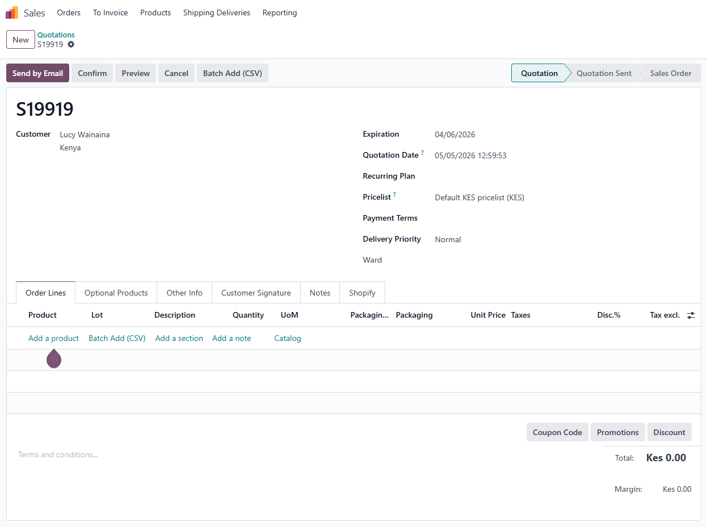
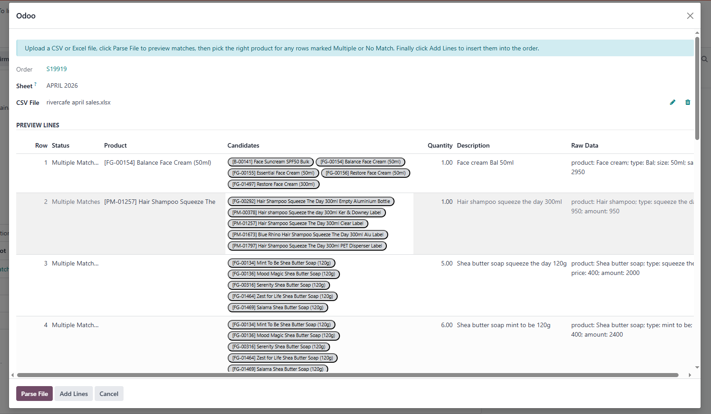

Fast batch import of product lines from CSV or Excel into Sales, Purchase, Inventory and Manufacturing documents.


Copy the batch_add folder to your Odoo addons directory and install the module from the Apps menu.
No external services are required and no activation key is needed.
This module is released under LGPL-3.